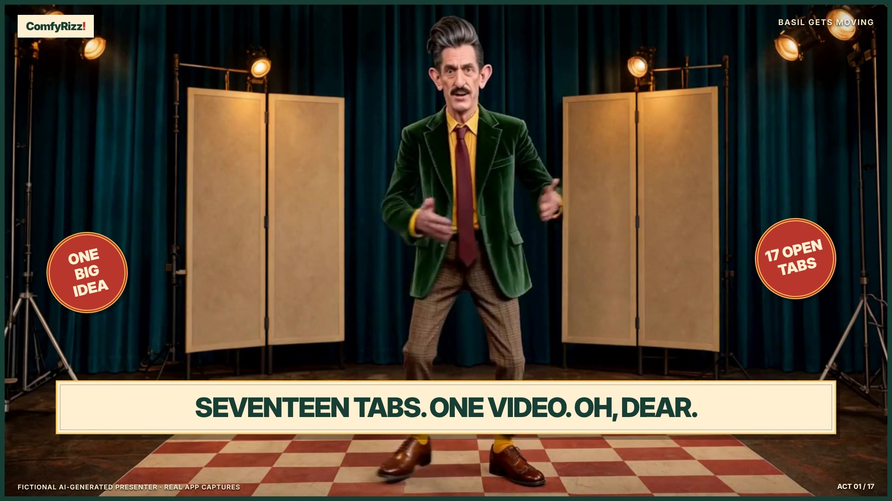
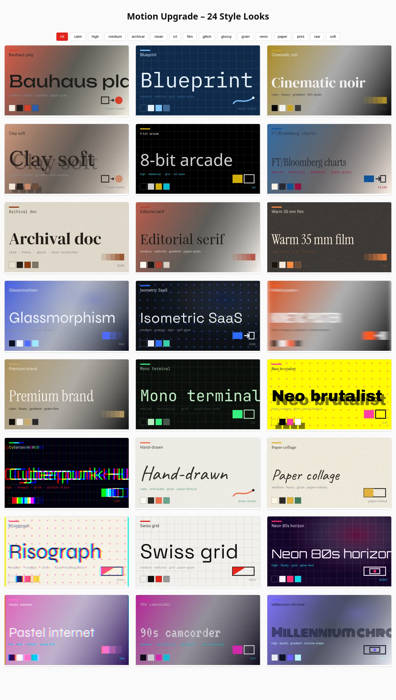
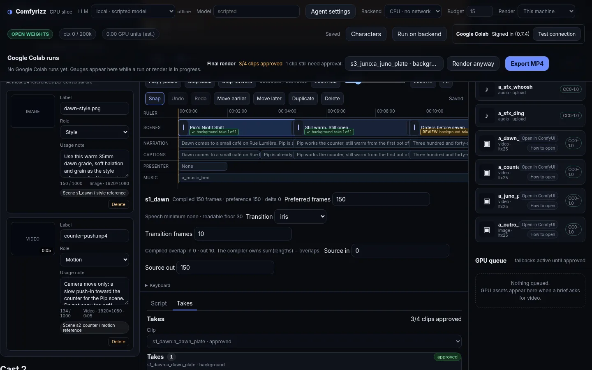

Review the idea first.
Super Easy proposes a title, logline, look, duration, and soundtrack. Revise the creative proposal before choosing Make this film.
Independent. Open source. Yours.
Take your idea from a few words to a finished cut. Open-weight visuals, exact text, and a timeline you can make your own.
MIT-licensed code Open-weight models MP4 export
New: saved projects, film review, and shareable invite galleries
Meet your next creative toolFrom brief to film
Start in Super Easy. Follow the plan, review the work, and keep creative control from first frame to final cut.
A story, a mood, a short brief. Build a plan for the scenes, look, and script before committing to a render.
YOUR IDEA → A PLANCreate stills with FLUX and motion with LTX through Comfy workflows. Preview the work and shape the cut.
OPEN WEIGHTS → VISUALSCode-rendered text, captions, and a Remotion finish bring everything together. Export an MP4 ready to share.
YOUR TIMELINE → MP4Introducing the Hermes plugin · v0.1.0
Bring Comfyrizz into Hermes. Brief a film, revise the plan, follow generation, export the cut, and ask for a retake—all from the conversation.
One film skill and a local MCP server connect Hermes to your running Comfyrizz engine. Review the spend card and explicitly accept generation before paid work begins. Paid retakes get their own acceptance.
MIT · Node.js 22+ · Separate local Comfyrizz engine required. Install from a checkout today; catalog installation is documented for when it is listed.
The production loop
Shape the story in chat before generating takes.
Accept the planned generation, then follow the job and review its takes.
Finish on CPU. Give an individual shot another pass when it needs one.
hermes plugins install . --no-enable
hermes plugins enable comfyrizz
hermes plugins listConfigure the local engine connection using the environment guide, restart Hermes, then ask for comfyrizz_status. A stub: true response means the engine is not connected yet.
What’s new in Comfyrizz
The latest release brings saved project continuity, a richer review flow, and live generation status to the one-prompt workflow. Run it yourself, or use an invite to the hosted demo.
Super Easy proposes a title, logline, look, duration, and soundtrack. Revise the creative proposal before choosing Make this film.
Choose Auto, H3, LTX, or Klein only. Auto combines identity art, scenery motion, and character acting; Klein-only pairs stills with code-driven motion.
Every project has one identity across Easy, Super Easy, the editor, and chat. Reopen it from Projects and its package, conversation, and generation state come back.
Follow planning, media, render, and delivery stages with queued, running, ready, and failed states. Stale shot previews keep their exact saved prompt, model, dimensions, and seed.
Review the finished film and each shot’s saved generation details. Download the MP4, ask the agent for a focused revision, or open Advanced mode for the timeline.
Follow the one-prompt setup guide for Linux or native Windows. Generate with managed Google Colab or your own ComfyUI, or use a hosted invite with its own shared budget.
Made with comfyrizz
A finished demo reel, followed by a look inside the tools. Watch the film, then explore how the pieces come together.


Behind the work
FLUX 3 Klein for stills. LTX-2.5 for motion. MiniMax H3 for character shots and native audio/video. Workflows you can inspect, and MIT-licensed application code you can build on.
Model licenses are separate from the app’s MIT license, including the MiniMax-H3 Community License.
Hosted demo
The hosted demo is invite-only and uses Google Colab. One reusable link can be shared: everyone sees the gallery, prompts, and models, with a shared credit budget, film quota, and expiry.
Guest generation is live for invited guests.
When Google Colab credits run out, finished films stay available to edit and re-render on CPU. Have an invite? Open the private link you were sent.
Read the setup guideBuilt in the open
Take a look under the hood. Make something only you would make.
Build with Comfyrizz